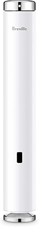
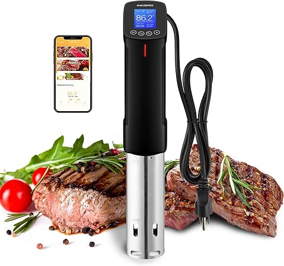
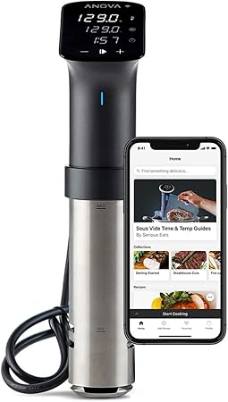
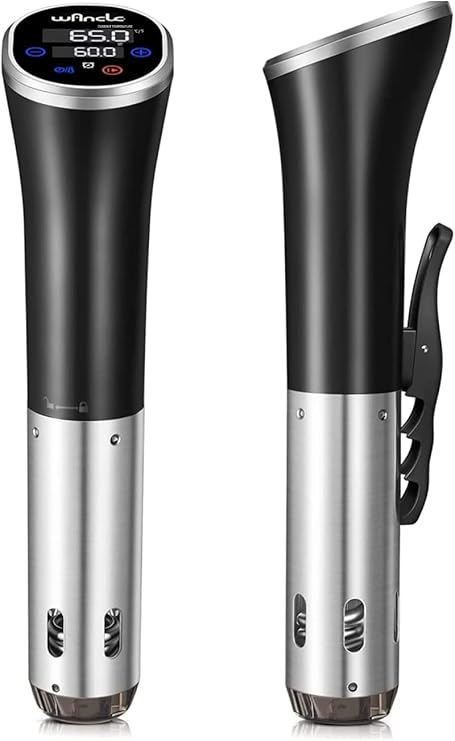
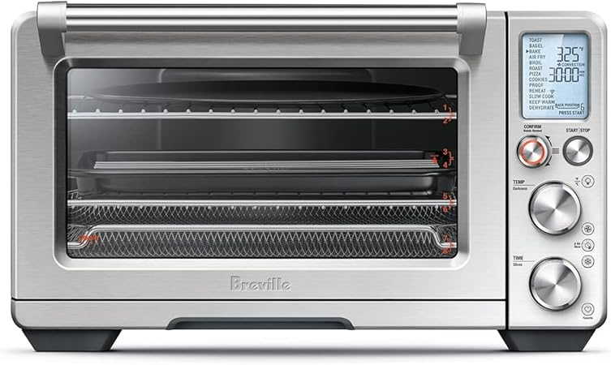

← bestsousvide.com
Sousvide — A Practical 2026 Guide
May 2026
Finding good sousvide shouldn't require hours of research. Yet in 2026, the sheer number of options makes it harder than it should be.
Errors That Cost Money
- Overbuying features — Most people use 20% of high-end sousvide features. Don't pay for what you'll never touch.
- Skipping negative reviews — A 4.5-star product with durability complaints tells you more than a 5-star product with 8 reviews.
- Panic buying on sale days — Prime Day and Black Friday sousvide deals aren't always real discounts. Check year-round pricing.
- Not measuring — "It looked bigger online" is the #1 return reason for sousvide. Measure twice.
From Our Testing Notes
- Set a firm budget before browsing. It's easy to creep up $50-100 comparing sousvide features.
- The 3-star reviews are gold. They're usually the most balanced and honest takes on sousvide.
Standout Options

→ #5 — Sous Vide Precision Cooker 1300W 2.4 WiFi Quiet Immersion Circulator Brushl — Editor's pick

→ #3 — Anova Culinary Sous Vide Precision Cooker 3.0 WiFi 1100 Watts Stainless Ste — Great value

→ #1 — Upgraded 2.4G WiFi Sous Vide Cooker 1100W Precision Immersion Circulator — Great value

→ #4 — Sous Vide Wancle Sous Vide Cooker 1100W IPX7 Waterproof Thermal Immersion C — Best seller

→ #2 — WIFI 2.4G Sous Vide Cooker 1000W Immersion Circulator with APP 14 Recipes — Consistently rated
What Separates Good From Great
- Compatibility — Always double-check that sousvide fits your specific setup before ordering.
- Availability — In-stock with fast shipping beats a "better" product backordered for weeks.
- Price trends — sousvide prices fluctuate. Track your picks and buy when the price dips.
- Material grade — Higher-grade materials in sousvide last longer and perform better, even when designs look similar.
Where Things Stand
We update our sousvide reviews as new products launch. Bookmark bestsousvide.com for the latest.
Affiliate Disclosure: As an Amazon Associate, we earn from qualifying purchases. This doesn't affect our recommendations.